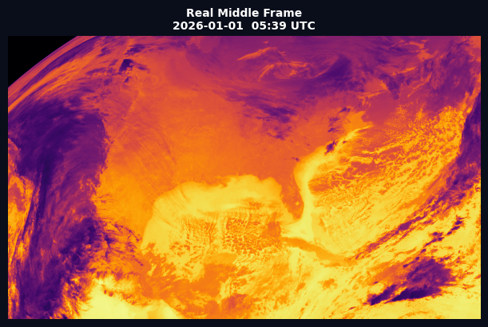
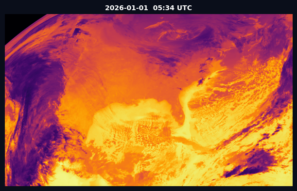

01
Satellite Data Successfully Loaded
GOES-19 ABI Channel 13 · Thermal Infrared (~10.3 µm) · Jan 1, 2026
What you are seeing: Real thermal infrared satellite data from the GOES-19 geostationary satellite.
Each pixel represents brightness temperature — darker = colder (cloud tops), brighter = warmer (land/sea surface).
These are the raw .nc files downloaded from the NOAA AWS public bucket, processed with Python and displayed here.
GOES-19 · Frame 1
2026-01-01 · 05:34 UTC
INPUT A
GOES-19 · Frame 3
2026-01-01 · 05:44 UTC
INPUT B

GOES-19 · Frame 2 (Real)
2026-01-01 · 05:39 UTC
GROUND TRUTH
02
Frame Interpolation Comparison
Input A + Input B → Predict the middle frame · Baseline vs Ground Truth
What we did: We took Frame A (05:34) and Frame B (05:44) as inputs and predicted
what the satellite would have seen at 05:39 — the middle point.
This prototype uses simple linear interpolation (pixel average) as a baseline.
During the hackathon, the RIFE deep learning model will replace this and produce
significantly sharper, more accurate predictions.
Input Frame A
05:34 UTC
INPUT
Predicted Frame (Linear Avg)
05:39 UTC · Baseline method
AI PREDICTED
Real Frame (Ground Truth)
05:39 UTC · Actual satellite data
GROUND TRUTH
MSE
—
Mean Squared Error
Lower is better · Target: <0.005
PSNR
—
dB · Peak Signal-to-Noise Ratio
Higher is better · Target: >30 dB
SSIM
—
Structural Similarity Index
Closer to 1.0 is better
These are baseline scores from simple linear interpolation.
The RIFE deep learning model (to be trained during the hackathon)
will significantly improve SSIM and PSNR by learning actual cloud motion patterns.
03
Temporal Resolution Enhancement — Live Demo
Original 5-min frames vs AI-interpolated 2.5-min frames · Side by side
What you are seeing: LEFT shows the original satellite frames cycling at their natural 5-minute intervals.
RIGHT shows the same sequence with AI-interpolated frames added in between,
effectively doubling the temporal resolution.
Notice how the right animation is smoother — cloud features evolve more continuously.
During the hackathon, this will be applied to INSAT-3DS (30-min → 15-min → 7.5-min).
📡 Original GOES-19 Frames
6 frames · 5-min intervals

1 / 6
6 frames total
🤖 AI-Interpolated Frames
11 frames · 2.5-min intervals

1 / 11
11 frames total